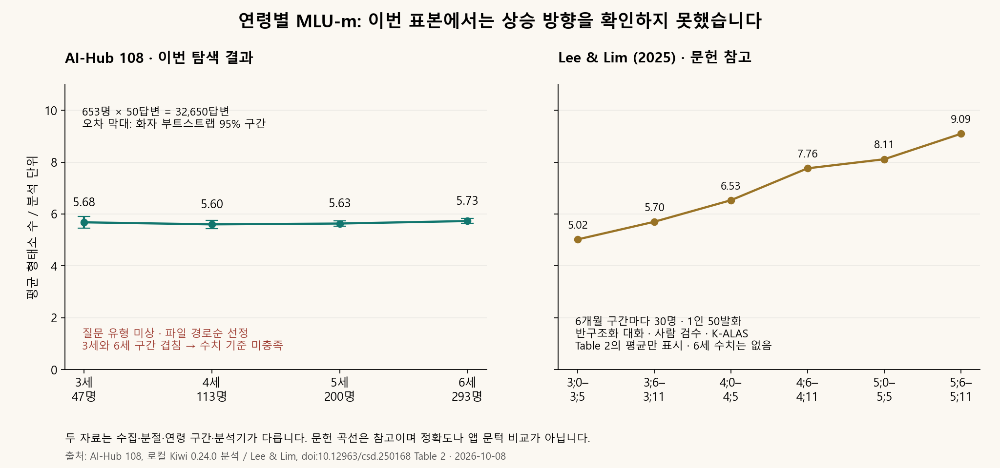

1
배경 · 왜 시작했나
짧게 답했다는 사실만으로 판단해도 될까?
“어디 갈까?”에 “공원”이라고 답하는 것은 자연스럽다. 어떤 질문에 한 말인지 함께 봐야 한다.
앱은 이미 질문 단계를 규칙으로 바꾸고 있다. 발화 지표 작업은 여기에 새 기준을 연결하기 전, 무엇을 세고 무엇을 빼는지부터 정하는 단계다. 선택·확인 질문의 짧은 답이나 카드·오또의 말을 아이의 자유로운 설명과 섞으면 계산의 뜻이 달라진다.
- 말의 길이 · MLU-m
- 형태소 수의 합을 분석 가능한 답변 수로 나눈다. 조사와 어미는 포함하고 문장 부호는 뺀다. 띄어쓰기 단위인 어절 수와는 다르다.
- 낱말 다양성 · NDW
- 명사·동사 등 내용어의 기본형과 품사를 묶어 서로 다른 유형을 센다. 답변이 많으면 값도 늘 수 있어 답변 수와 내용어 토큰 수도 함께 본다.
- 까닭 표현 후보
- “왜냐하면”, “~해서”, “~니까” 같은 형태를 찾는다. 시간 순서를 나타낼 수도 있어 실제 까닭 설명을 했다고 바로 확정하지 않는다.
기본 분석 범위는 아이가 열린 질문에 한 답이다. 질문 유형을 모르면 추측하지 않는다. 표본이 비어 있으면 낮은 점수 대신 “계산할 표본 없음”으로 남긴다.
근거: 측정 계획 · 계산 정의, 기술 어필 계획 §③. 이번 문헌 비교는 Lee & Lim(2025) 원문 Table 2와 방법을 확인했다.
과정 · 기존 기록을 순서대로
먼저 기준을 정하고, 도구를 검사했다
아래 항목은 같은 날 남긴 구현·검증 기록이다. 자동 검사와 명령 실행은 다른 확인 범위이며, 아동 실험 횟수로 세지 않는다.
2
2026-10-08 · 실제 분석기 명령 실행
표본이 적은데 성공했다고 말하지 않는가
무엇을: Kiwi가 실제로 실행되는 명령에 합성 화자 2명 × 각 1답변을 넣었다.
왜: 프로그램이 끝났다는 사실과 연령 타당성을 확인했다는 사실은 구분해야 한다.
결과: insufficient_sample, 즉 표본 부족으로 기록됐다. 이것은 예상한 처리이며 실제 아동 검증 성공이 아니다.
2026-10-08 · AI-Hub 108 실제 전사 탐색
화자 수는 충분했지만 연령 방향 기준을 넘지 못했다
무엇을: 승인받은 라벨 6개 ZIP의 JSON 2,807,994개를 조사하고, 3~6세 화자당 첫 50개 적격 답변을 분석했다.
왜: 앱 질문 규칙에 연결하기 전에 연구 지표가 현재 표본에서 어떻게 나타나는지 확인하기 위해서다.
사전 기준: 3세·6세 각각 10명 이상, 화자당 50답변. 2,000회 화자 재표집(시드 320)의 95% 구간에서 3세 상한이 6세 하한보다 작아야 한다. 질문 유형이 없으면 탐색으로만 보고한다.
결과: 653명·32,650답변. 3세 5.680 [5.458–5.899], 6세 5.729 [5.636–5.823]로 구간이 겹쳤다. 기존 CLI로 동일 입력을 다시 계산한 결과도 일치했다.
사람 분절 일치율은 미측정이다. 질문 정보, 동일 문장 반복, 파일순 표집의 영향을 분리해야 한다. 성공하도록 기준을 낮추거나 앱 문턱을 바꾸지 않았다.
참고 — 현재 표본의 앱 적용 보류결과 · 어디까지 확인했나
도구 검사는 통과, 실제 전사의 연령 구간은 겹침
서로 다른 평가를 같은 성적 그래프로 묶지 않았다. 완료 여부와 그 결과가 말해 주는 범위를 함께 적었다.

확인 범위별 결과
| 확인한 것 | 기록 | 이 결과의 범위 |
|---|---|---|
| 계산·측정 자동 검사 | 25개 통과 | 고정 예제와 합성 표본의 계산·제외·집계 동작 |
| 기존 평가 검사 포함 | 51개 통과 | 위 25개 포함. 서로 독립된 아동 평가 두 번이 아님 |
| 합성 입력 CLI | 표본 부족 | 2명, 각 1답변을 성공으로 처리하지 않음 |
| AI-Hub 연령별 탐색 | 기준 미충족 | 653명 · 3세 5.68 / 6세 5.73 · 95% 구간 겹침. 질문 종류 미상 |
| 분석기와 사람의 분절 일치 | 미실시 | 로컬 검수표 50개 준비. 사람이 아직 작성하지 않음 |
| 질문 규칙 연결 전/후 | 미실시 | 타당성 확인 뒤 별도 실험 |
| 실제 아동 효과 · S7 성능 | 미실시 | 계산기 통과로 대신할 수 없음 |
표 출처: #320 기존 검증 기록 · AI-Hub 108 탐색 기록.
결론 · 현재와 다음 단계
현재 표본의 결과는 보존하고, 앱 적용은 보류한다
현재 채택한 것: #328의 로컬 Kiwi 계산기와 측정 도구.
앱에서 발화 지표로 질문 난이도를 새로 바꾸는 기능은 아직 적용하지 않았다.
실제 아동의 언어 발달 향상이나 발달 지연 선별·진단을 입증한 결과도 없다.
다음에 할 일 — 정해 둔 순서
아직 결정·구현하지 않은 것: 앱 적용 문턱과 지표의 지속 저장. 세션을 넘는 원 지표 보관은 #343 규칙 변경 제안 단계다. 이 문서 작업에서 제품 로직이나 보관 정책을 바꾸지 않았다.
다음 단계의 숫자는 사전에 정한 측정 조건이며 달성 결과가 아니다. 기준을 먼저 남긴 #320 댓글.